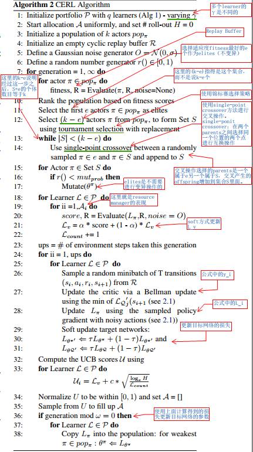
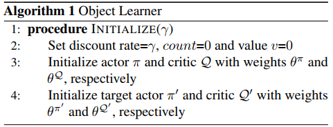
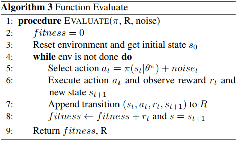
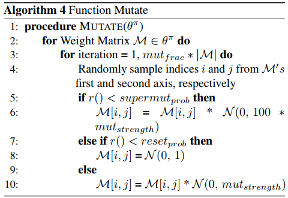

Collaborative Evolutionary Reinforcement Learning
算法概述
该算法的主要思想就是使用k个actors组成一个population，这些actors的作用就是得到好的transactions，Learners使用这些transactions来进行学习得到好的策略。其实里面的population的存在可以理解为一种off-policy的实现方式。
算法讲解
TD3算法
CERL算法的Learner使用的是TD3算法，所以我们先简单介绍一下TD3算法。TD3算法是基于AC框架的一种算法，其使用一个deterministic policy $\pi:S\rightarrow A$和两个不同的动作值函数(critic)逼近$Q:S\times A\rightarrow R_i$.actor和critic网络通过随机从Replay Buffer里面采样mini-batchl来更新参数。critic通过最小化下面的损失函数来训练：
$$
\begin{align}
&L_i=\frac{1}{T}\sum_i(y_i-Q_i(s_i,a_i|\theta^Q))\cr
&\text{where} \ y_i=r_i+\gamma\min_{j=1,2}Q_j’(s_{i+1},\tilde a|\theta^{Q_j’})
\end{align}
$$
其中的$\tilde a=\pi’(s_{i+1}|\theta^{\pi’})+\epsilon$,$clip(\epsilon\sim N(\mu,\sigma^2) -c,c)$,公式里面的$\min_{j=1,2}$指的是两个critic里面选择最小的那个。
actor的训练使用采样策略梯度：
$$
\triangledown_{\theta^\pi}J\sim\frac{1}{T}\sum\triangledown_aQ(s,a|\theta_a^Q)|_{s=s_i,a=a_i}\triangledown_{\theta^\pi}\pi(s|\theta^\pi)|_{s=s_i}
$$
仔细一看其实就是导数的链式法则。
CERL算法
该算法基于off-policy，对于行为策略，该算法使用了遗传算法的population actors来生成transactions，再加上所有Learners生成的transactions组成我们的Replay Buffer。而对于遗传算法中的actors,会依据遗传算法不停地进行进化，以努力得到好的transactions供Learners进行学习，下面是主算法流程图：

这里的Learners使用的是TD3算法，多个Learner之间的折价损失$\gamma$不同，Learner的初始化算法如下：

注意这里使用了target网络和evaluation网络的架构。Evaluate算法用于对策略的性能表现进行测试，算法伪代码如下：

其中的$\pi$值得是我们需要进行evaluate的策略，$R$是Replay Buffer，noise是往动作里面增加的噪声。再下面还有进化算法的变异操作：

可以发现变异操作主要还是对策略的参数增加噪声。我们经常接触的神经网络优化算法是梯度下降，也就是通过计算损失和梯度对参数进行更新，这种算法更新速度快，但是遵循梯度的更新策略容易使得训练陷入局部最优解中，而进化算法是一种启发式搜索算法，其优化过程不依赖于梯度，不会陷入局部最优解中。
主要的几个点
- 何为resources redistribution？为什么resource redistribution平衡了exploration和exploitation？算法里面有一个allocation A,其保存着每个learner对应的worker分配数目，算法每次都会计算一个$U$值，然后将其进行归一化得到一个分布，然后再从这个分布里面进行采样得到新的A，这样就每次训练一次就更新一次资源分配，这样就实现了resources redistribution.在算法的一次更新里面，每一个learner启动的worker数目不是一个，而是多个并且数目就是对应的A值，这些属于同一个learner的worker使用的是相同的策略（learner的策略），这样的话如果learner的worker数目多，它探索的策略就多，这样就增加了对应的learner的探索性，而其它分配的worker数目少的learner的exploration就低，exploitation就高。
- 交叉操作是怎么回事？使用的遗传算法里面的single-point crossover方法进行的变异操作。所谓的single-point crossover方法，也就是对
- learner和actor有什么联系和差别？该算法的总体思想是population of actors用于产生transactions，其Evaluation的目标就是为了得到参数好的transactions用于后面的learner进行学习，所以该算法的actor就是为了给learner提供transactions。